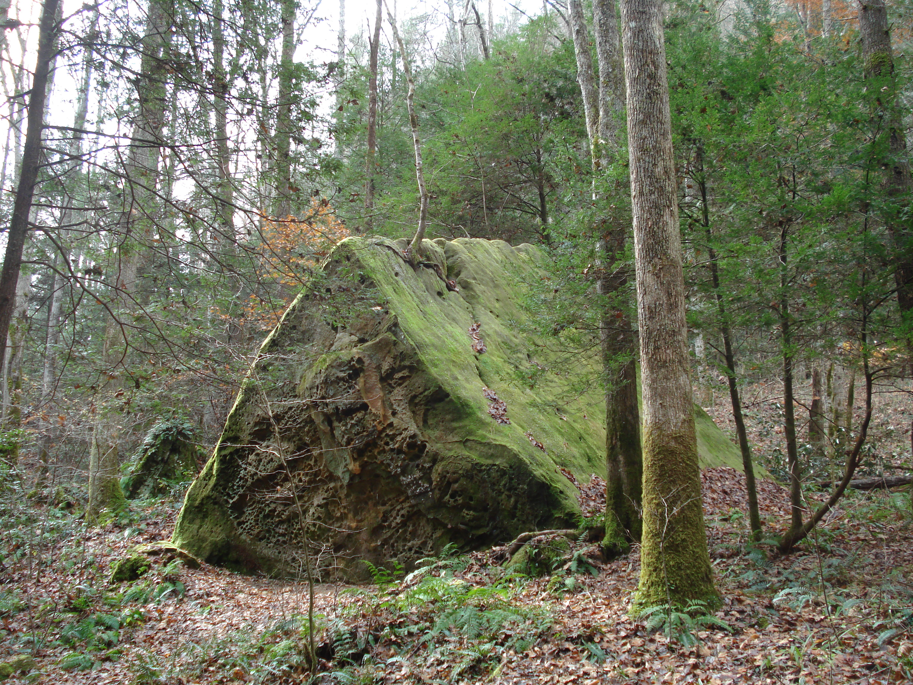

Red River Gorge: a place of beauty
A Natural Wonderland
Red River Gorge is full of interesting geological features, trails to awe-inspiring overlooks, and delightful waterfalls. Copperas Creek Falls is a relatively easy hike up an unofficial trail, and worth a visit.

An interesting feature on the trail along Copperas Creek, photo by Zina Merkin
The Site Visit
Before going to the site, I built a simple base map in ArcGIS Pro, exporting it as a Geospatial PDF file. This was loaded into an online application, Avenza maps. This can be accessed on a smart phone and was used to take a location point when I arrived at my chosen location, Copperas Creek Falls.This is an image of the map -- you can download the Geospatial PDF here.

The waterfall in pictures
Approaching the falls on Copperas Creek is deceptive -- you can hear it before you can see it. The creek turns to the right while the trail goes to the left, up a small rise. There in the distance, through the rhododendron leaves, you can see the falls pouring over the rocky edge, but you can't see how tall it is.

A glimpse of Copperas Falls --- photo by Zina Merkin
Coming a little closer, its height is more apparent.

Most of the falls is in view --- photo by Zina Merkin
The falls pours over a narrow area of the rock shelf, but the shelf itself creates a rock shelter which curves around almost a third of the shallow plunge pool. The pool area is sandy, and sand and rock cover the slope up under the rock shelf.

Copperas Creek Falls dropping into a shallow, sandy plunge pool --- photo by Zina Merkin
I did not use an application to measure the falls at the site, but I did measure it from the ArcGIS Pro 3-D scene, at about 43 feet tall. On the day of the site visit, it seemed about 5 or 6 feet wide.
The website Kentucky Waterfalls gives the height as 42 feet.
On the right when facing the falls is a steep hill made of material which has fallen over time from the overhanging edge. From that hill is a good view of falls, and you can really get a sense of the size of the rock shelter.

View from the hill on the right --- photo by Zina Merkin
You also can see a bit of the landscape around the top of the falls.

Looking at the lip of the falls, and creek bank beyond --- photo by Zina Merkin
The following picture gives another view of the overhang, to the left of the falls.

Looking from the hill on the right into the overhang on the left --- photo by Zina Merkin
More about Me!
- See my projects on GitHub: Zina's GIS Experiments
- Follow me on LinkedIn: zrm4landscape